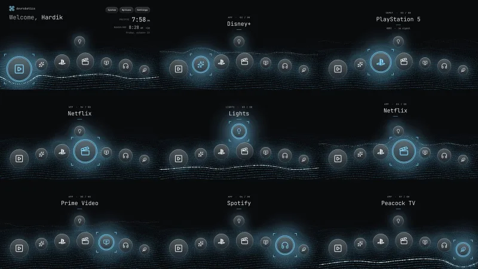
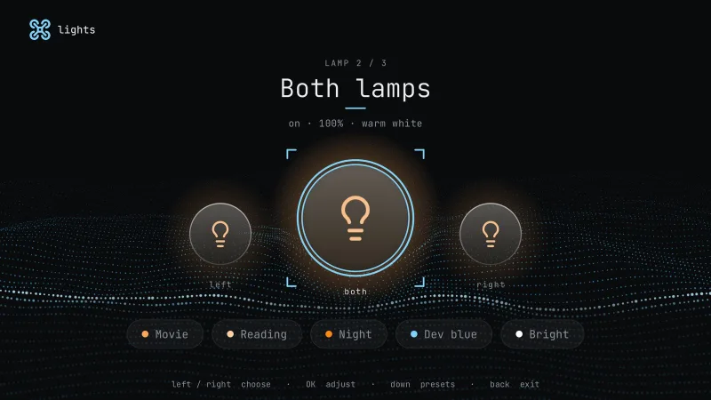
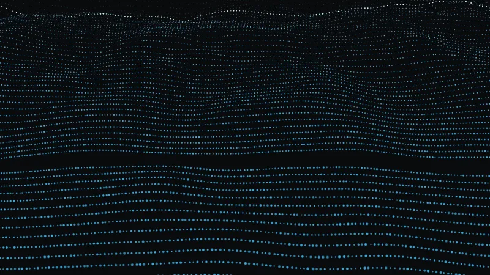

01 · Overview
A TV that looks like it belongs to the site
The TV came with ads, tracking and a home screen built to sell things. I removed the bloat and the telemetry, blocked the tracking domains with an on-device DNS filter, and replaced the home screen with one that uses the devrobotics look: a dark background, a sky-blue accent, JetBrains Mono for every word, and the LiDAR point cloud from the home page of this site.
The apps sit in an even arch of frosted-glass discs with custom line icons, so the streaming apps' own logos never show. When you move across them, the cloud around the selected disc bends away like the hero on the home page, a soft glow follows, and a short tone plays on a pentatonic scale over a quiet ambient pad. Two clocks show Pacific and Bangalore time.

02 · How it was built
From debloat to a custom launcher
- Disabled 36 Amazon packages, plus 13 for Alexa, over ADB and added a local DNS filter that blocks telemetry and update hosts. The change survives reboots.
- Forked an open-source launcher and rewrote the home screen in plain Java. Android 11 needed workarounds: a background surface that sits behind the window, a default focus box, and font files it silently ignores.
- Ported the site's point-cloud shaders to OpenGL ES 2. A first version on the CPU used about 80% of a core at 10 frames per second; the GPU version stays smooth on a weak TV chip.
- Took over the HOME button with an accessibility service that covers Amazon's own launcher, since Android 11 will not let an app replace it.
- Remapped the TCL button on the remote, which never reaches apps as a key press, to open YouTube.
03 · Lights
The lamps, from the couch
A separate app controls my two Govee floor lamps over the local network: pick one lamp or both, choose a preset (movie, reading, night, dev blue, bright) or adjust colour and brightness with the remote. Opening a video app dims the lamps to 20% and returning to the home screen restores them.

04 · Screensaver
The point cloud, full screen
The screensaver is a real Android screensaver service that fills the screen with the same point cloud. The delay is set in the app's Options. Games and video keep the screen awake, so it never starts during play.

05 · System design
How the whole system fits together
The TV runs a few small pieces. Pick a view.
Architecture
Everything runs on the TV. Home draws, Guard watches, and the filter and the Lights app stand beside them.
How it works
- One small launcher. Home does the drawing, the focus and the launching, and nothing else. Anything that needs power (the HOME hook, lamps, filtering) lives in its own piece.
- The launcher is offline. It has no network permission. Only the Lights app talks to the local network, and the filter sits in front of everything.
- Amazon’s launcher stays. Android keeps it as the real home app. tVOS covers it fast enough that it is rarely seen.
Home takeover
Android 11 will not let an app replace the home screen, so tVOS catches it and covers the gap.
- 1HOMEThe remote sends the normal key.
- 2AmazonIts launcher starts first.
- 3CoverGuard draws a dark overlay.
- 4LaunchAn alarm starts Home.
- 5HomeThe cover is removed.
How it works
- Why a visible window. Background activity starts are blocked on Android 11 unless the app has a visible window. The cover provides one.
- Why an alarm. An alarm PendingIntent is allowed to start an activity, and the system setting for minimum alarm delay is set to zero so it fires at once.
- Escape hatch. Holding HOME opens the Fire OS menu, and Options has an entry for Amazon’s own home.
Rendering
The same shaders as the website, running on a weak TV GPU.
- 1GridAbout 15,000 points.
- 2ShaderHeight, sweep, fade, size.
- 3WarpsIcons push points away.
- 4GlowOne layer behind the icons.
- 5GlassFrosted icons on top.
How it works
- Measured. About 8.5 percent of one core and 98 MB of memory with the cloud running, with over 600 MB of RAM still free.
- Warps. Up to ten warps can be active, so the cloud also bends around the focus brackets and the previous selection as it eases away.
- Screensaver. The same view in a mode that tilts the camera and adds near rows so the terrain fills the whole screen.
Lights
Lamp control stays on the home network and is gated by a signature permission.
- 1OpenA video app starts.
- 2DimLamps go to 20 percent.
- 3WatchNothing else happens.
- 4ReturnHome restores them.
How it works
- Discovery. The lamps are found by multicast, so a changed address needs no setup.
- Presets. Movie, Reading, Night, Dev blue and Bright, each with its own colour temperature and level.
- Tested. The lamp messages have unit tests, including the colour command that took a day to find.
Privacy
The TV makes far fewer calls home, and every change can be undone.
- 1RemoveDebloat 36 packages.
- 2StarveBlock background and network.
- 3FilterDNS filter as a VPN.
- 4CheckVerify after every change.
How it works
- What is blocked. Telemetry hosts and Fire OS update hosts. Updates are blocked on purpose; the restore path is documented.
- Alexa. Removed completely at my request. About 44 MB of RAM came back.
- Persistent. The debloat survives a reboot, and a verify script confirms it.
TCL button
A key the system hides, caught by the window it causes.
- 1PressTCL key.
- 2AppstoreAmazon opens a listing.
- 3GuardSees the window.
- 4YouTubeOpens instead.
How it works
- Why this way. The key never becomes a key event, so no app can bind it. The only observable effect is the Appstore window it opens.
- Known limit. It works most of the time but not every press. The remaining cause is still being traced.
Components
Nine parts, each small.
Why this way
The choices that kept it light and reversible.
How it works
- Plain Java and no libraries. The TV has 1.8 GB of RAM shared with the system, so every dependency would be a cost. The whole launcher builds in seconds with the command-line tools.
- GPU, not canvas. The first point cloud was drawn on the CPU and used about 80 percent of a core at around 10 frames per second. The GPU version uses about 8.5 percent of one core and stays smooth.
- A cover, not a replacement. Fire OS will not let another app become the real home screen, and Amazon’s launcher holds Settings. So tVOS lets it start, hides it and takes over.
- Fonts and icons are bundled. Android silently ignores subset variable fonts, so the app ships full static JetBrains Mono files. The icons are Lucide line icons converted to Android vector drawables.
- No network for the launcher. Only the Lights app has network access, and only to the local network. The DNS filter handles the rest.
- Everything is reversible. A restore script returns the TV to stock behaviour, and an Options entry opens Amazon’s home at any time.
06 · Credits
Built on open source
Built on the work of others: the debloat and lockdown scripts are dumbtv (MIT), whose launcher I forked; the DNS filter is personalDNSfilter; icons are Lucide and the PlayStation mark is from Simple Icons; the type is JetBrains Mono (OFL).